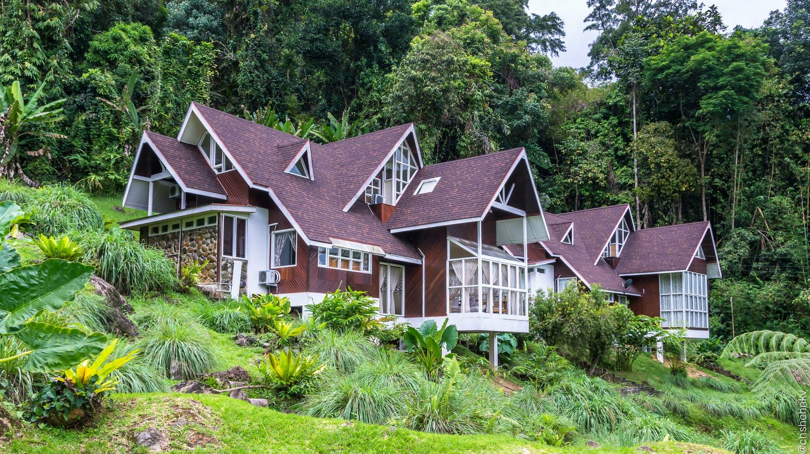

После спорт-лагеря у нас был день отдыха, а затем мы взяли на прокат машину на шестерых и отправились из Сандакана обратно в Кота-Кинабалу. Не то чтобы мы отправились прямо вот сразу. Нет :) Машину Дима получал наверно полчаса. По закону подлости ему досталась какая-то самая необразованная девушка острова Борнео. Она то ли читать не умела, то ли писать, то ли всё вместе. В общем, она переписывала бланки несколько раз, но в итоге всё равно умудрилась накосячить — Диме потом даже звонили несколько раз из-за того, что она забыла переписать данные с его банковской карты. Но к этому я еще вернусь чуть позже.
О том, как мы укладывали наши пожитки в эту тачку можно писать отдельный пост. Когда паззл сложился мы даже сфотографировали его, чтобы потом не вспоминать, как нам удалось засунуть туда 6 чемоданов и один рюкзак 
Наш путь лежал через парк, где живут обезьяны-носачи. Об этом мы уже писали.
По пути в Кота-Кинабалу у нас была запланирована остановка в местечке Поринг. Между собой иначе как Упоринг мы его не называли с самого момента, как узнали о его существовании :) Это один из многочисленных входов в парки у подножия горы Кинабалу. Сам парк насчитывает порядка 700 квадратных километров. Так что можете представить себе масштаб :)
За рулем были по очереди я и Дима, как два самых прожжённых водителя, имеющих опыт вождения машины с правым рулём по «встречке» левостороннего движения :) Машину мы брали на 7 посадочных мест в надежде, что на седьмое место мы сложим наши вещи. В результате Катя ехала на сидении в багажнике, постоянно придерживая сваливающиеся на неё чемоданы. По пути снимали видосы на гоупро :)
В Поринге мы остановились на вилле «Пальма» в Poring Hot Springs & Nature Reserve. Шикарное место — сразу за окнами джунгли. Внутри три спальни, огромная гостиная, кухня и еще чуть-чуть места :)
Мы хотели бы остаться там и на 30 число, но, увы, все дома уже были забронированы.
Мы приехали уже вечером, поэтому в парк нам предстояло идти с утра пораньше. Наш рок с наличной валютой в этой поездке продолжился и здесь. Ничему нас жизнь не учит :) Наличных рингитов у всех осталось ровно столько, чтобы купить входные билеты в парк, а чтобы поужинать — уже нет. В результате ужинали мы практически под честное слово, что расплатимся на ресепшене картой :) С нами даже отправили специального человека, чтобы он проконтролировал всё :)
Сам парк стоит того, чтобы остановиться там хотя бы на пару дней. В нём есть вольер с бабочками, горячие сероводородные источники, висячие мосты, пара водопадов и растущая неподалеку раффлезия.
Раффлезия — это цветок-паразит. У него огромные (по сравнению с остальными растениями) цветы. Вернее это всё — один большой цветок. Цветёт якобы раз в году несколько дней. Но я что-то сомневаюсь, что нам так сильно повезло, что мы случайно приехали к ее цветению :)
Само растение хищное, внутри цветка — диск с шипами. Кого ест — непонятно, но при некислых габаритах туда может поместиться кто угодно из мелких зверюшек :) Пахнуть он должен тухлым мясом, чтобы привлекать насекомых. Может и пахнет конечно, но мы не почувствовали.
Чтобы посмотреть на это чудо природы нужно взять с собой проводника из местных жителей. Стоит это 30 рингитов за человека. Примерно 10 долларов. Мы насобирали всю мелочь по карманам, но всё равно пришлось поменять баксы в местном ресторанчике, так как денег на всех не хватало. В проводники нам выдали … маленькую девочку. У неё оказалось какое-то сложное имя и мы решили, что будем звать её Наденькой. Как-то созвучно оказалось. Честно говоря зачем там нужен проводник — мы не поняли. В лесу висят указатели, показывающие где и сколько цветов сейчас цветет. Видимо, местная программа занятости населения :)
Сам цветок выглядит фантастически — он не похож ни на что. Мы постарались и засняли, что у него там внутри несмотря на ограждения:
До парка бабочек мы шли через висячие мосты — ощущения необычайно крутые, особенно когда проходишь над бездной. Некоторые подвешены очень высоко и если посмотреть вниз — голова кружится.
В парке бабочек нас застал небольшой дождик. Фигня, подумали мы, и отправились к водопадам. Один из них находится примерно в 700 метрах от входа в парк, а вот второй — Langanan — в 3,7 км от входа. Мы-то наивные полагали, что дорожка до него будет устлана плиткой, как и везде в парке. А нет. Дорога лежала через самые настоящие джунгли. В путеводителе было написано, что дорога может занять порядка двух часов и столько же обратно. При этом на указателях мы вычитали, что к Ланганану выпускают до 2 часов дня под запись — то есть ты должен записаться в журнал перед выходом. И даже это нас не особо удивило или насторожило.
Этот поход, пожалуй, наше самое яркое впечатление за всю поездку, поэтому, посовещавшись, мы решили, что каждый из нас независимо друг от друга опишет свои впечатления о нём. Такого у нас ещё не было и думаю, что должно получиться интересно :) Но вам придётся набраться немного терпения :)

Взятие Ланганана. Версия Димы.
Взятие Ланганана. Версия Ани.
Взятие Ланганана. Версия Кати.
Взятие Ланганана. Версия Стаса.
Взятие Ланганана. Версия Саши.
Взятие Ланганана. Версия Лили.
Комментарии